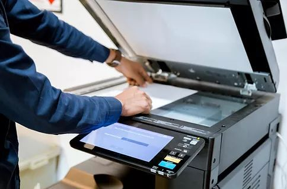
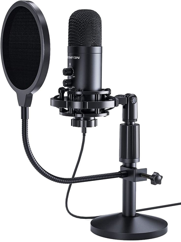
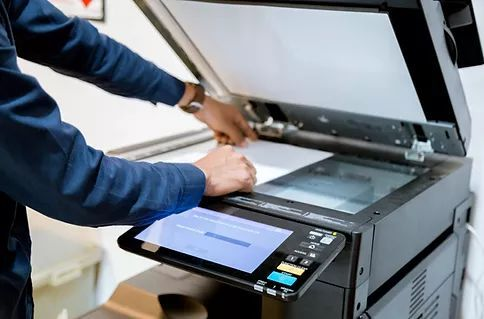
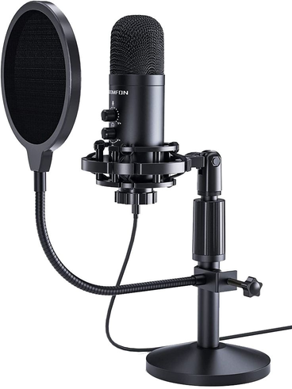

What is Computer Hardware?
Computer hardware refers to the physical components of a computer system that work together to perform tasks. This includes the processor (CPU), which executes instructions; memory (RAM), which temporarily stores data for quick access; storage devices like hard drives or SSDs for long-term data storage; input devices such as keyboards and mice to enter information; output devices like monitors and printers to display results; and peripheral components such as graphic cards or external drives that enhance functionality. Together, these parts form the foundation of a computer, enabling it to run software, process data, and interact with users.
YouTube Video Placeholder
To add your video:
1. Get your YouTube video URL (e.g., https://www.youtube.com/watch?v=VIDEO_ID)
2. Replace VIDEO_ID below with your actual video ID
3. Remove the comment tags around the iframe
History of Computer Hardware
Ancient & Mechanical Computing
2400 BCE – 1837
Use of the Abacus
Ancient civilizations – Early tool for arithmetic
Invention of Mechanical Calculator
Blaise Pascal – Created Pascaline
Advanced Mechanical Calculator
Gottfried Wilhelm Leibniz – Developed Stepped Reckoner
Concept of Programmable Computer
Charles Babbage – Designed Analytical Engine
First Computer Program
Ada Lovelace – Wrote algorithm for Analytical Engine
Theoretical & Early Electronic Era
1936 – 1956
Theory of Computation
Alan Turing – Proposed Turing Machine
First Electronic Digital Computers
Eckert & Mauchly – Built ENIAC
Invention of the Transistor
Bardeen, Brattain, Shockley – Created transistor
Magnetic Core Memory
Jay Forrester – Developed magnetic core memory
First Commercial Hard Disk Drive
IBM – Released IBM 305 RAMAC
Miniaturization & Personal Computing
1960s – 1980s
Integrated Circuits Invented
Jack Kilby & Robert Noyce
Floppy Disk Introduced
IBM – Created portable data storage
First Microprocessor
Intel – Released Intel 4004
Altair 8800 Released
Ed Roberts / MITS – Sparked PC revolution
IBM PC & Storage Evolution
IBM, Osborne, Grid Systems – PC standardization & laptops
Networking & Multimedia Expansion
1990s – 2000s
Multimedia & Networking Hardware
Robert Metcalfe – Ethernet; NVIDIA & 3dfx – 3D graphics
USB Standard Introduced
USB Implementers Forum – Universal peripheral interface
Multi-core & SSDs
Intel, AMD – Dual/quad-core CPUs; SSDs mainstream
Modern & Future Computing
2010s – 2020s
Cloud Computing Hardware
Google, Amazon, Microsoft – Large-scale server optimization
GPUs for AI and Gaming
NVIDIA, AMD – AI, gaming, parallel computing
AI Hardware Accelerators
Google, NVIDIA, AMD – TPU v1 and AI GPUs
Energy-Efficient AI & Quantum
NVIDIA, AMD, Google, IBM, Rigetti, IonQ
Historical Images

Glenn A. Beck and Betty Snyder program ENIAC in BRL building 328 (U.S. Army photo, c. 1947–1955)
Physical Components
Peripheral devices are external devices connected to a computer that help it input, output, or store data. They are not part of the main computer system (like the CPU, motherboard, or RAM), but they extend its functionality. Peripheral devices are usually plugged in via USB, Bluetooth, HDMI, or other ports, and modern systems often support plug-and-play, automatic driver installation, and hot-swapping.
Input Devices
Allow users to enter data or commands into a computer


 



- Keyboard: Allows typing of letters, numbers, and commands; can be standard, mechanical, or adaptive (e.g., Braille)
- Mouse / Trackpad: Moves a pointer and enables item selection; optical and laser sensors enhance precision
- Webcams / Cameras: Capture video input for communication, recording, or AI applications (e.g., facial recognition)
- Scanners: Convert physical documents or images into digital formats
- Microphones: Capture sound and send it to the computer
Output Devices
Display, project, or produce results from the computer


- Monitors / Displays: Show visuals, graphics, and text; LCD, LED, OLED; high refresh rates and resolutions support gaming and professional design
- Printers: Produce physical copies of digital documents; includes inkjet, laser, and 3D printers
- Speakers / Headphones: Produce sound; high-definition or surround sound for multimedia
- Projectors: Display large-scale visuals for presentations or classrooms
Hybrid Devices
Perform both input and output functions


- External Hard Drives / USB Flash Drives / SSDs: Store and retrieve data
- Touchscreen Monitors: Display output and accept touch input
- Network Cards / Adapters / Modems: Send and receive data over networks (Ethernet, Wi-Fi)
Current Technologies
With the rapid growth of technology, modern computer hardware has evolved to become faster, smaller, more energy-efficient, and more powerful. Current hardware technologies are designed to support high-performance computing, artificial intelligence, cloud systems, and everyday digital activities.
Central Processing Unit (CPU)
The CPU is the brain of the computer, a complex electronic chip that executes program instructions, performs calculations, and manages data flow.
- Multi-core architectures enable simultaneous task execution
- Advanced nanometer fabrication (5nm and 3nm processes)
- Integrated graphics for basic tasks
- Hyper-threading and simultaneous multithreading (SMT)
Examples:
Intel Core i7/i9 (13th–14th Gen) and AMD Ryzen 7/9 series with hybrid architectures
Apple M-series chips (M1, M2, M3) using System on a Chip (SoC) technology
Graphics Processing Unit (GPU)

A specialized electronic circuit designed for digital image processing and to accelerate computer graphics.
- Ray Tracing technology for realistic lighting and shadows
- Thousands of cores designed for parallel processing
- Ideal for heavy mathematical computations
Examples:
NVIDIA RTX 30 and 40 Series, AMD Radeon RX 6000 and 7000 Series
NVIDIA's Tensor Cores for AI and machine learning applications
Memory (RAM)

High-speed, short-term, temporary storage for data actively being used by the CPU.
- DDR4: Fourth generation offering higher speeds (starting around 2133MHz), greater bandwidth, increased power efficiency (1.2V)
- DDR5: Faster data transfer rates, enabling smoother multitasking and better performance in demanding applications
Storage Technologies
- Solid State Drives (SSD): Use flash memory for faster boot times and improved durability
- NVMe SSDs: Extremely fast data transfer via PCIe lanes
- Hybrid Systems: Combine SSDs and HDDs for balanced performance
Examples:
Samsung 980 Pro or Western Digital SN850 NVMe SSDs
Cloud-integrated storage combining physical SSDs with cloud backups
Motherboard and Chipset
Modern motherboards support faster CPUs, high-speed RAM, and advanced connectivity options.
- USB-C, Thunderbolt, and PCIe 5.0 support
- Better power management and improved security
- Support for overclocking
Features:
Wi-Fi 6 and Wi-Fi 6E built-in for faster wireless connections
Faster data transfer for high-performance components
Applications
Education
Computer hardware supports online learning, virtual classrooms, and digital assessments. Students use laptops, tablets, and desktop computers to access educational platforms, conduct research, and complete academic tasks.
Business
Hardware technologies enable automation, data analytics, and enterprise resource planning (ERP) systems, improving productivity and decision-making. Secure hardware components also help protect sensitive business information.
Healthcare
Computer hardware is used in medical imaging, patient record systems, and diagnostic equipment. Wearable health devices and IoT-based medical sensors collect real-time patient information, allowing faster diagnosis and improved patient care.
Engineering & Scientific Research
Engineers and scientists rely on high-performance computing hardware to perform complex calculations, simulations, and data analysis in fields ranging from aerospace to quantum physics.
Entertainment
Computer hardware powers gaming, film production, music creation, and digital animation. High-end GPUs and CPUs enable realistic graphics, real-time rendering, and immersive virtual reality experiences.
Industrial & Manufacturing
Industries use computer hardware in automation systems, robotics, and quality control. Programmable logic controllers (PLCs), sensors, and embedded systems monitor and control industrial processes.
Communication & Networking
Computer hardware enables global communication through networking devices such as routers, switches, servers, and data centers. These components support internet connectivity, cloud computing, and online services.
Challenges in Computer Hardware
The End of Moore's Law
For decades, we relied on the idea that transistors would double every two years. Today, we are hitting a literal physical wall.
The Issue: Transistors are now so small—reaching the 2nm and 3nm scale—that quantum tunneling occurs. This means electrons jump across gaps they shouldn't, causing errors.
Evidence: The cost of building a fabrication factory to make these tiny chips has skyrocketed to over $20 billion, making it economically unsustainable for most companies (TSMC and Intel).
The Power Wall and Thermal Management
High-performance AI chips generate immense heat, requiring radical new cooling solutions like microfluidics to prevent hardware failure.
The Issue: Chips are getting too hot to handle. When hardware runs at extreme speeds, it consumes too much energy and produces extreme heat.
Solution: Modern data centers for NVIDIA's H100 GPUs are now shifting to liquid cooling and immersion cooling, where the whole server is literally dipped in special non-conductive liquid just to stay functional.
Memory and Storage Bottleneck
The Memory Wall presents a significant challenge. Imagine a Ferrari (the CPU) stuck in a traffic jam (the Memory). No matter how fast the processor is, if the RAM can't feed it data fast enough, it becomes useless.
The Gap: CPU speeds have grown by 50% annually, but memory latency only improved by 10%.
Solution: HBM3 (High Bandwidth Memory) was invented to stack memory directly on top of the processor, as standard DDR5 RAM is too slow for AI applications.
Specialized Hardware Demands
The rise of AI, ML, and specific workloads (like graphics) exposes the inefficiency of general-purpose CPUs, demanding a new paradigm of specialized, domain-specific chips.
The Shift: CPUs are 'jacks of all trades' but masters of none. For AI and Graphics, they are inefficient.
Example: Apple moved from Intel to their own M-series chips. By adding 'Neural Engines' specifically for AI, their laptops became faster and more energy-efficient than traditional PCs.
Hardware-Level Security Threats
Previously, software was the main security concern. Now, the vulnerability is inside the silicon itself.
The Threat: Hackers are using 'side-channel attacks' to steal data by monitoring the power consumption or heat of a chip.
Example: Vulnerabilities like Spectre and Meltdown showed that even the way a processor 'predicts' your next move can be exploited to steal passwords, forcing a total redesign of security architectures.
Sustainability and E-Waste
The rapid pace of hardware replacement creates massive environmental burdens and a need for sustainable "green" hardware.
The Problem: Our 'upgrade culture' is creating a mountain of trash that the Earth cannot digest. Every year, millions of tons of hardware end up in landfills, leaking toxic chemicals.
Solution: Companies like Framework are creating 'Modular Laptops' where you can replace a single port or the mainboard without throwing the whole computer away. This is the 'Green Hardware' movement.
Future Trends in Computer Hardware
Quantum Computing Integration
Quantum Computing isn't just a faster computer; it's a completely different way of processing information using 'qubits'.
How it Works: While a classical computer tries every door one by one to find a key, a Quantum computer can 'exist' in front of all doors at once.
Achievement: IBM and Google have already demonstrated 'Quantum Supremacy,' solving problems in minutes that would take today's fastest supercomputer 10,000 years to finish.
Edge AI Accelerators
Instead of sending your data to the cloud (like Google or OpenAI servers), your device will do the 'thinking' locally.
Benefits: This ensures privacy and speed. Your phone doesn't need the internet to process your face or voice.
Example: The latest Snapdragon and Apple chips have dedicated NPUs (Neural Processing Units) that allow real-time language translation even when you are in 'Airplane Mode'.
Chiplet and Modular Design
Instead of making one giant, expensive chip, we are now 'Lego-fying' hardware. The Chiplet Revolution breaks chips into smaller components that can be mixed and matched.
Benefits: By breaking a chip into smaller 'chiplets,' you can mix and match different technologies and reduce manufacturing errors.
Example: AMD's Ryzen processors combine a 5nm chiplet for speed with a cheaper 12nm chiplet for simple tasks, making high-performance PCs much more affordable.
Neuromorphic and Photonic Computing
Hardware that mimics the human brain's efficiency or uses light (photons) instead of electricity to move data.
Advantage: Electricity produces heat; light (photons) does not.
Example: Intel's 'Loihi' chip is a neuromorphic processor that 'pulses' like a neuron. It can process data using 1,000 times less energy than a standard processor, perfect for future robotics.
Next-Gen Materials (SiC/GaN)
Silicon is retiring. We are moving to next-generation materials like Silicon Carbide (SiC) and Gallium Nitride (GaN).
Advantage: These materials handle high voltage and heat much better than silicon.
Example: Modern phone chargers that are small but 'Fast Chargers' use GaN technology. It allows power bricks to be 50% smaller while charging your devices twice as fast without melting.
RISC-V and Open Hardware
A move toward open-source processor designs that allow companies to build custom hardware without paying massive licensing fees. This is the 'Linux' of hardware—freedom from big tech monopolies.
Current Situation: Companies have to pay huge royalties to use ARM or Intel designs. RISC-V is an open-source alternative.
Example: Many tech giants in China and even NASA are shifting to RISC-V to design custom chips for space and AI without being tied to a single Western supplier.